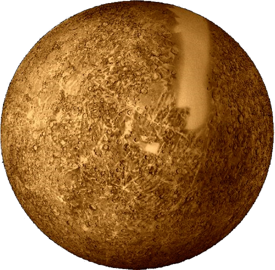

Венера
Описание
- Вене́ра — вторая по удалённости от Солнца планета Солнечной системы, наряду с Меркурием, Землёй и Марсом принадлежащая к семейству планет земной группы.
- Названа в честь древнеримской богини любви Венеры.
- По ряду характеристик — например, по массе и размерам — Венера считается «сестрой» Земли.
- Венерианский год составляет 224,7 земных суток.
- Она имеет самый длинный период вращения вокруг своей оси (около 243 земных суток, в среднем 243,0212 ± 0,00006 сут) среди всех планет Солнечной системы и вращается в направлении, противоположном направлению вращения большинства планет.
- Венера не имеет естественных спутников.
Назад
